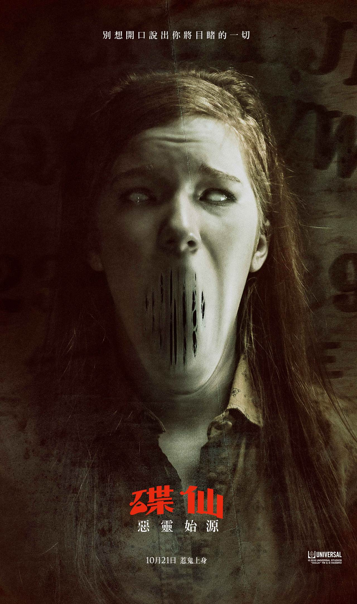

碟仙：惡靈始源
Ouija：Origin of Evil
| 類 型：恐怖、懸疑/驚悚
導 演：《鬼遮眼》麥可弗拉納根
演 員：《地獄怪客》道格瓊斯、《真愛一世情》亨利湯瑪斯、《殺手47》羅伯特奈普、《暮光之城》伊莉莎白瑞瑟
發行公司：環球影業
2014年《碟仙》在美國首周開片以黑馬之姿勇奪冠軍，2016年《碟仙：惡靈始源》敘述為了要將召喚來的惡靈送回
陰間，這一家人必須去面對他們內心最恐懼的事物。環球電影公司發行的超自然驚悚大作《碟仙》續集《碟仙：惡
靈始源》古老的碟仙板將再次召喚出惡靈。《碟仙：惡靈始源》由Platinum Dunes製作公司麥可貝、布萊德富勒超
和安德魯福姆（《國定殺戮日》系列、《忍者龜》、《德州電鋸殺人狂》）與Blumhouse Productions製作公司傑
森布倫（《國定殺戮日》、《陰兒房》系列）以及孩之寶的布萊恩戈德納（《變形金剛》系列和《特種部隊》系
列）和史蒂芬戴維斯（《碟仙》）共同製作，編劇為麥可弗拉納根與傑夫霍華《鬼遮眼》。
|